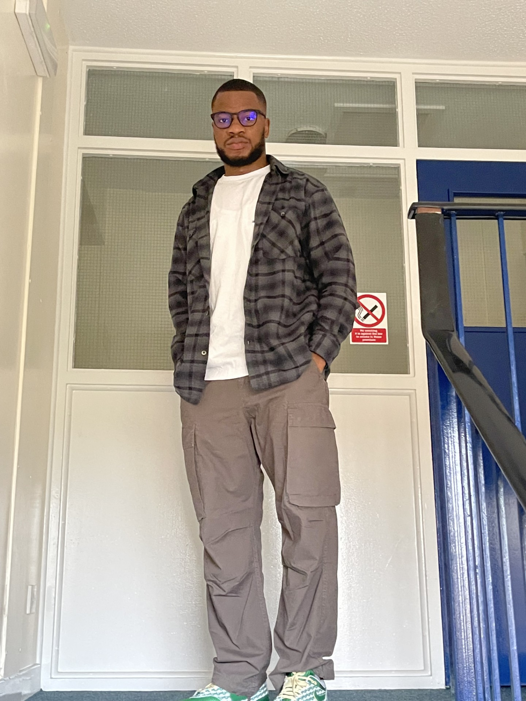

Master of Science in Information Systems, University of Cincinnati
I'm pursuing a Master of Science in Information Systems at the University of Cincinnati because my background in Business Management has shown me how technology drives efficiency, innovation, and customer satisfaction in modern organizations. I've developed a passion for bridging business needs with IT solutions. This program will allow me to deepen my skills in areas like cybersecurity, data analysis and cloud networking, enabling me to tackle real-world challenges such as data security and system optimization. Ultimately, I aim to advance into roles where I can integrate technology to enhance business operations and support strategic decision-making.
| Day | Course Code | Course Type | Time | Location |
|---|---|---|---|---|
| Monday | IS7020 - 001 | Lecture | 18:00 - 21:50 | Carl H. Lindner Hall 3240 |
| Wednesday | IS7030 - 001 | Lecture | 18:00 - 21:50 | Carl H. Lindner Hall 3240 |
| Thursday | IS7020 - 002 | Lecture | 18:00 - 21:50 | Carl H. Lindner Hall 0050 |
| Friday | BA 7077 - 001 | Lecture | 14:30 - 15:25 | Carl H. Lindner Hall 1410 |
I watch soccer a lot and am a long-term supporter of Barcelona FC.
FC Barcelona Official WebsiteI love to go to the gym 5 to 6 days a week to stay fit and healthy.